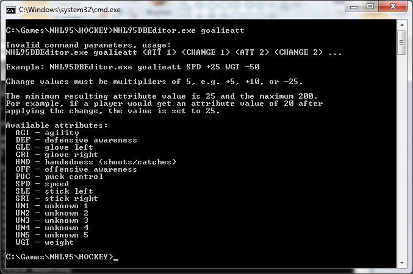
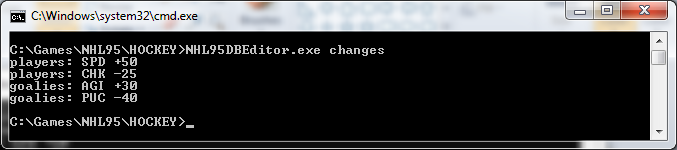

NHL95DBEditor is a console program for editing the database files of EA Sports NHL Hockey 95 for PC. Its main use case is changing the attributes of all players or goalies, e.g. increasing the speed of all players by 25 to increase the game's tempo.
This project is no longer actively developed due to other projects taking precedence.
Download
The program must be run in the same directory where the database files are. The default database files are in the NHL Hockey 95 installation directory.
Backups
The program takes backups of all database files before making the first changes, and you can reset the database files back to the original ones with the reset command. You should still copy the database files somewhere else for extra safety if they contain valuable changes. The files are named ATT.DB, CAREER.DB, CARTEAMS.DB, KEY.DB, SEASON.DB, and TEAMS.DB.
Usage
Run the program without arguments to see its usage information.

Dumping database information
All database information can be dumped to the screen in textual format with the data command. It spills out a lot of data, so you will probably want to write the data to a file. To do that, redirect the program output to a file like you would do for any Windows program by appending > FILENAME to the command.
Changing attributes of all players or goalies
You can change attributes of all players or goalies with the playeratt or goalieatt command. Run the command without additional parameters to see more information about its usage.

Some examples:
- Increase all players' speed by 50 and decrease their checking by 25:
playeratt SPD +50 CHK -25 - Increase all goalies' agility by 30 and decrease their puck control by 40:
goalieatt AGI +30 PUC -40
Seeing what changes have been made
The program keeps track of the changes it makes in a file named change-log.txt in the directory it is run. The file's content is output after each playeratt/goalieatt command execution. You can also see the changes with the changes command.

Resetting changes
The program takes backups of all database files before making the first changes to them. You can reset the database files back to the original ones with the reset command.
Adding a team
You can add a new team to the database with the addteam command. It creates the team by duplicating the team and player data of the first team in the database (Boston Bruins), though the new team is called New Team Newcomers.
The command only adds the team to the database, so it cannot be used in the game without adding new files and modifying existing ones. But it can be a useful first step if you want to figure out how to add teams to the game. After adding a team, you can try to access or use it in the game, see where the game crashes, and try to deduce from the crash what changes might be needed.